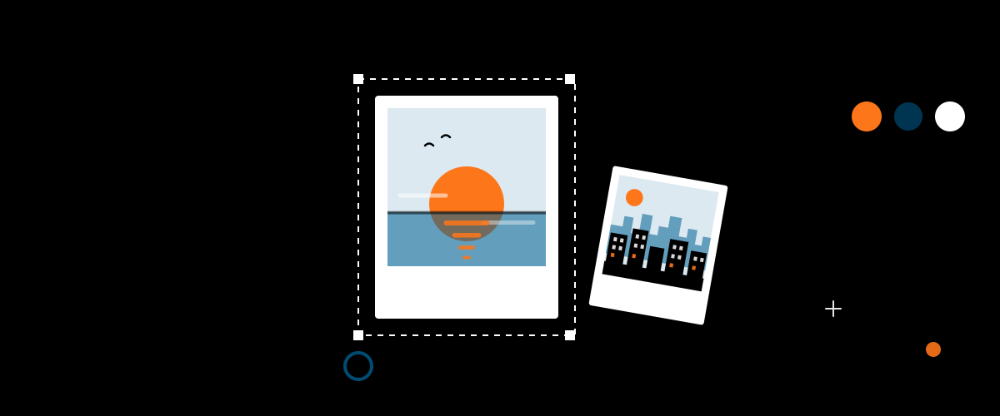

Não deixe para depois
Seu rolo de câmera está cheio de histórias.
Escolha algumas hoje. Um dia, segurar essas fotos vai significar ainda mais.

Como funciona
Você escolhe as fotos, o PolarLive organiza as folhas e você imprime onde quiser.
Importe do aparelho ou tire na hora com a câmera. Fotos de iPhone também funcionam.
Escolha entre seis formatos de polaroid ou crie um tamanho só seu. O PolarLive conta quantas folhas você vai precisar.
Recorte, ajuste a luz e aplique um filtro. Escreva a legenda, a data e o local em fontes feitas para o papel.
Uma checagem avisa o que pode sair diferente do esperado. Depois, baixe o PDF e imprima em casa ou na gráfica.
Processamento 100% local. Suas fotos não sobem para nenhum servidor.
Não deixe para depois
Escolha algumas hoje. Um dia, segurar essas fotos vai significar ainda mais.
